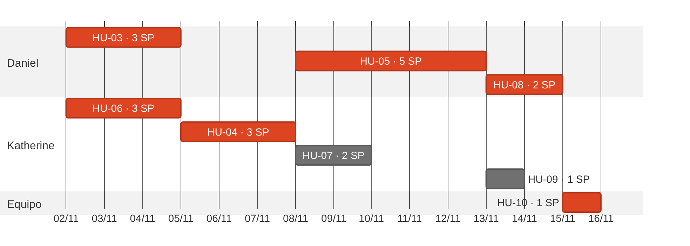
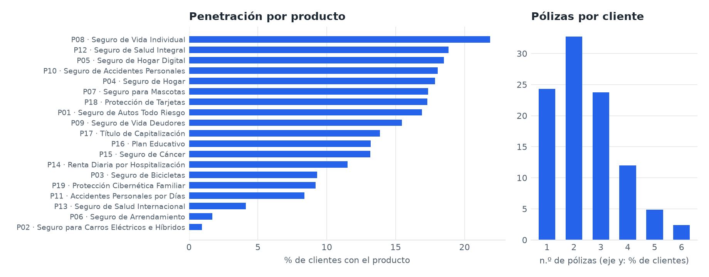
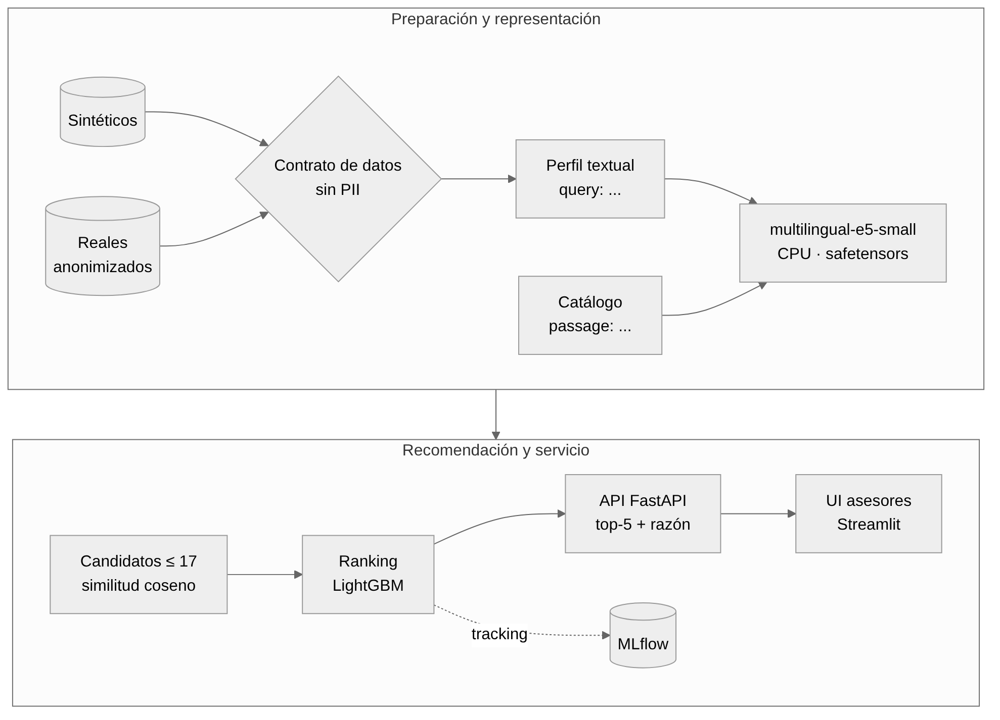
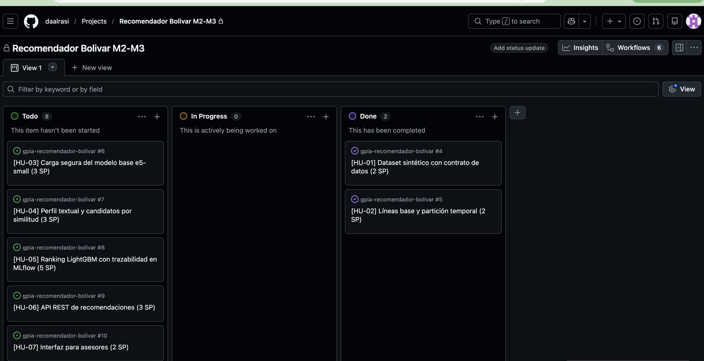

Una aseguradora de personas vende más de veinte líneas de producto por canales digitales, asesores y la red bancaria aliada. Hoy la oferta de un segundo o tercer seguro depende de campañas masivas y de la intuición del asesor: el cliente que tiene carro recibe la misma campaña que quien no lo tiene, y los productos de nicho (mascotas, arrendamiento, salud internacional) casi no se ofrecen. El resultado es una venta cruzada baja: en la cartera de referencia cada cliente tiene en promedio {{POL_MEDIA}} pólizas y el {{PCT_UNA}} % tiene una sola.
Siguiendo el enfoque de Data Thinking se partió de la pregunta: ¿Cómo podríamos ayudar a los asesores a ofrecer a cada cliente el siguiente seguro que realmente necesita, sin depender de campañas masivas ni de la intuición? Los actores son el cliente persona (recibe ofertas irrelevantes), el asesor (no sabe qué ofrecer y a quién), el gerente de producto (necesita aumentar pólizas por cliente), el equipo de datos (debe operar el modelo con trazabilidad) y cumplimiento (protección de datos y trato justo). Los datos disponibles son el perfil del cliente, su historial de pólizas y siniestros y el catálogo de productos.
| Campo | Valor |
|---|---|
| Identificación | intfloat/multilingual-e5-small · huggingface.co/intfloat/multilingual-e5-small |
| Autoría | Microsoft (L. Wang et al.), publicado como modelo abierto en Hugging Face [1] |
| Función matemática | Codificador de texto (transformer de 12 capas, 118 M parámetros) que produce embeddings de 384 dimensiones para recuperación semántica por similitud coseno; entrada de hasta 512 tokens en 94 idiomas |
| Uso en el proyecto | Codificar el catálogo (passage: …) y el perfil del cliente (query: …) para generar candidatos; resuelve el arranque en frío |
| Licencia | MIT: permite uso comercial, modificación y redistribución |
Entrenamiento. Preentrenamiento contrastivo débilmente supervisado sobre pares de texto multilingües a gran escala y ajuste fino con conjuntos etiquetados de recuperación [1]. Métricas reportadas. La Model Card publica resultados de recuperación multilingüe y de la suite MTEB; el proyecto no los toma como garantía y mide su propio desempeño con Recall@5 y NDCG@5. Limitaciones. Trunca textos de más de 512 tokens; exige los prefijos query: y passage:; su calidad baja en registros coloquiales poco representados en la web. Sesgos. Al aprender de textos de internet puede codificar estereotipos de género o región. Mitigación: el perfil textual excluye género, nombre e identificadores (HU-04) y el desempeño se audita por estrato, ciudad y género (HU-09). Decisión humana. La recomendación es un apoyo; el asesor decide y el cliente puede rechazarla.
| Dimensión | Restricción |
|---|---|
| Software | Python 3.13 con uv; PyTorch CPU y sentence-transformers; LightGBM; FastAPI; Streamlit; MLflow; pytest y ruff |
| Hardware | CPU de 4 núcleos, 8–16 GB de RAM; sin GPU. Pesos del modelo ≈ 470 MB; imagen Docker objetivo ≤ 2,5 GB |
| Datos | Sintéticos para desarrollo; reales solo anonimizados, con autorización escrita de la gerencia y dentro de la infraestructura de la compañía |
| Licencias | Modelo MIT; LightGBM MIT; FastAPI MIT; Streamlit Apache 2.0. Se descartó TabPFN porque sus versiones recientes tienen licencia no comercial [9] |
| Ejecución | Inferencia local y sin internet: ningún dato de cliente se envía a APIs externas |
Construir un servicio desacoplado que recomiende a cada cliente persona los cinco seguros más relevantes que aún no tiene, combinando embeddings de multilingual-e5-small con un ranking LightGBM, expuesto mediante API FastAPI e interfaz para asesores y empaquetado en Docker CPU, listo para operar con datos reales anonimizados.
| Objetivo (O) | Resultados clave (KR) |
|---|---|
| O1. Que cada cliente reciba ofertas de seguros relevantes | KR1 Recall@5 ≥ 0,70 · KR2 cobertura del catálogo ≥ 80 % · KR3 brecha entre grupos ≤ 10 pp |
| O2. Dejar un servicio confiable listo para datos reales | KR1 0 columnas PII aceptadas por el contrato · KR2 imagen Docker que corre sin internet · KR3 CI en verde con cobertura ≥ 85 % |
| KPI | Tipo | Línea base | Meta | Medición |
|---|---|---|---|---|
| Recall@5 | Técnico | {{SEG_R}} | ≥ 0,70 | Evaluación offline por versión (MLflow) |
| NDCG@5 | Técnico | {{SEG_N}} | ≥ 0,48 | Evaluación offline por versión |
| Latencia p95 de la API | Técnico | — | < 200 ms | Prueba de carga en CPU |
| Cobertura del catálogo | Técnico | {{COB_POP}} % | ≥ 80 % | Productos distintos en los top-5 |
| Pólizas por cliente | Negocio | {{POL_MEDIA}} | +5 % en piloto | Cartera, 6 meses tras el piloto |
| Conversión de ofertas | Negocio | Por medir | Superior a campaña masiva | Prueba A/B en el piloto |
| Categoría | Elementos |
|---|---|
| In (incluido) | Generador sintético y contrato de datos; modelo base e5-small; candidatos por similitud; ranking LightGBM; MLflow; API FastAPI con la razón de cada recomendación y medición de latencia; UI para asesores; Docker CPU; CI; auditoría de sesgo |
| Nice to have | Exportación ONNX para menor latencia; monitoreo de deriva de datos; especificación SDD y AGENTS.md; comparación académica con TabPFN; despliegue en Hugging Face Spaces o en la nube corporativa |
| Out (excluido) | Tarificación, suscripción o decisiones de elegibilidad; envío automático de ofertas sin asesor; entrenamiento del modelo base desde cero; GPU dedicada; datos reales sin anonimizar |
El sprint de construcción (M3) dura 15 días calendario con dos integrantes. Cada historia es una tarea atómica (1 SP = 1 día, regla 1:1 del curso). La preparación (entorno uv, datos sintéticos, contrato y líneas base: HU-01 y HU-02) ya se completó durante el M2 y es la base del sprint. El cronograma y la tabla CPM se calculan automáticamente desde docs/backlog.json, la misma fuente del Capítulo 5 y del tablero.

| Tarea | Depende de | Dur. | ES | EF | LS | LF | Holgura |
|---|
* Dependencia de recurso: la tarea la realiza la misma persona y no puede ejecutarse en paralelo.
Ruta crítica: {{RUTA}} = {{DURACION}} días, holgura cero. Incluye las tres tareas críticas del curso: descarga y verificación de pesos (HU-03), contratos numéricos del preprocesamiento (perfil y vectores, HU-04) y las dependencias C++ en Docker (LightGBM requiere libgomp en la imagen, HU-08). La API (HU-06) arranca el día 0 en paralelo con un recomendador simulado; también queda con holgura cero porque Katherine debe terminarla antes de empezar HU-04 (dependencia de recurso). La ruta deja {{HOLGURA_SPRINT}} día(s) de colchón frente a los 15 del sprint. Los días 3 a 6 Daniel no tiene tarea crítica asignada y apoya la revisión de PR y la preparación de variables para HU-05.
| Integrante | Historias | SP | Capacidad | Uso |
|---|
HU-10 (1 SP) se reparte entre los dos integrantes (0,5 SP cada uno).
El servicio no usa GPU ni APIs externas: cada petición codifica un perfil corto (≈ 60 tokens) con e5-small en CPU, compara contra 19 vectores de producto precalculados y ordena hasta 17 candidatos con LightGBM. Las cifras de latencia son estimaciones de diseño para un núcleo de CPU moderno; HU-06 mide el p95 de la API y HU-08 verifica la imagen limitada a 1 vCPU y 2 GiB. Si la medición supera el presupuesto, la primera palanca es exportar a ONNX (Nice to have) y la segunda reducir a INT8.
| Etapa | Estimado p95 | Presupuesto | Medición |
|---|---|---|---|
| Validación Pydantic y serialización FastAPI | ≈ 5 ms | 20 ms | HU-06 |
| Codificación del perfil con e5-small (PyTorch CPU) | ≈ 30 ms | 100 ms | HU-03 |
| Similitud coseno contra 19 vectores precalculados | < 1 ms | 10 ms | HU-04 (p95 < 50 ms incl. codificación) |
| Ranking LightGBM de ≤ 17 candidatos | ≈ 2 ms | 30 ms | HU-05 |
| Razón legible de cada producto del top-5 | ≈ 5 ms | 40 ms | HU-06 |
| Total de la petición | ≈ 45 ms | < 200 ms | HU-06 (1.000 peticiones) y HU-08 |
Recursos. Pesos fp32 de ≈ 470 MB; memoria residente esperada ≈ 1 GiB por proceso (meta < 1,5 GiB); contenedor de 1 vCPU y 2 GiB; imagen ≤ 2,5 GB. El arranque en frío (carga del modelo) se estima en 5–10 s y no cuenta dentro del p95 de la API.
| Escenario | Peticiones/mes | vCPU-s | GiB-s | Costo (USD) |
|---|---|---|---|---|
| Local o servidor propio de la compañía | ilimitado | — | — | ≈ 0 (hardware existente) |
| Piloto: asesores de una regional | 100.000 | 10.000 | 20.000 | 0 (capa gratuita) |
| Operación nacional: asesores + canal digital | 1.000.000 | 100.000 | 200.000 | 0 (capa gratuita) |
| Campaña masiva | 5.000.000 | 500.000 | 1.000.000 | ≈ 10,48 |
| Instancia siempre activa (sin arranque en frío) | cualquiera | 2.592.000 | 5.184.000 | ≈ 55,5 |
Supuestos: facturación por petición con redondeo a 100 ms (0,1 vCPU-s y 0,2 GiB-s por petición); CPU US$ 0,000024 por vCPU-s, memoria US$ 0,0000025 por GiB-s, US$ 0,40 por millón de peticiones; capa gratuita mensual de 180.000 vCPU-s, 360.000 GiB-s y 2 millones de peticiones. Campaña: (500.000 − 180.000) × 0,000024 + (1.000.000 − 360.000) × 0,0000025 + 3 × 0,40 = 7,68 + 1,60 + 1,20. Instancia siempre activa: tarifa por instancia de US$ 0,000018 por vCPU-s durante 30 días, descontada la capa gratuita.
Comparación con un LLM vía API. Resolver la misma recomendación enviando el perfil y el catálogo a un modelo de lenguaje comercial (≈ 1.500 tokens de entrada y 150 de salida con Claude Haiku 5.5: US$ 0,10 y US$ 0,50 por millón de tokens) costaría ≈ US$ 0,000225 por petición, es decir ≈ US$ 225 al mes en el escenario nacional, con latencias de segundos y, sobre todo, enviando datos de clientes a un tercero, lo que viola la restricción de ejecución local de la sección 1.5. El modelo abierto en CPU es más barato, más rápido y cumple la Ley 1581.
| Elemento | Opciones evaluadas | Decisión |
|---|---|---|
| Formato de pesos | .safetensors (carga sin ejecutar código) · .bin/.pt (pickle: puede ejecutar código arbitrario) · .onnx (interoperable, inferencia rápida) | .safetensors con revisión fijada; ONNX como Nice to have |
| Modelo de ranking | Popularidad, segmento, LightGBM LambdaRank [3][8], TabPFN [9] | LightGBM, guardado en texto (sin pickle) |
| Datos | Sintéticos propios · públicos (Insurance Company Benchmark COIL 2000, UCI) · reales anonimizados | Sintéticos con el mismo contrato que los reales |
| Técnicas | Embeddings densos [1][2], filtrado colaborativo, ranking supervisado | Híbrido: candidatos semánticos + ranking |
Dataset sintético. El generador produce, con semilla 42, {{N_CLI}} clientes, {{N_PROD}} productos, {{N_POL}} pólizas y {{N_SIN}} siniestros entre {{FECHA_INI}} y {{FECHA_FIN}}. No incluye nombres, documentos ni contactos; los nulos aparecen solo en fecha_fin (pólizas vigentes, {{NULOS_FIN}} %). La compra se simula con propensión por perfil (solo quien tiene carro compra Autos) y venta cruzada (Autos → Accidentes, Hogar → Mascotas, Salud → Renta por hospitalización), para que exista una señal aprendible. Los productos más frecuentes son {{TOP3}}.

Línea base. Con partición leave-last-out ({{N_EVAL}} clientes con dos o más pólizas), recomendar lo más popular logra Recall@5 = {{POP_R}} y NDCG@5 = {{POP_N}}; la popularidad por segmento (vehículo, vivienda, mascota y crédito) sube a {{SEG_R}} y {{SEG_N}}. La diferencia confirma que personalizar paga y fija el umbral del modelo propuesto.

| Fase | Entregable en este proyecto |
|---|---|
| 1. Business Understanding | Pregunta HMW, Canvas, OKR y KPI (secciones 1.1, 1.2 y 2.3) |
| 2. Data Understanding | EDA, reporte de nulos y penetración por producto (scripts/eda.py, Figura 2) |
| 3. Data Preparation | Contrato de datos, perfil textual sin PII, partición leave-last-out (HU-01, HU-02, HU-04) |
| 4. Modeling | Inferencia con el modelo MaaS e5-small, ranking LightGBM y trazabilidad en MLflow (HU-03, HU-05) |
| 5. Evaluation | Recall@5, NDCG@5, cobertura de catálogo, auditoría de sesgo por grupo y latencia (HU-05, HU-06, HU-09) |
| 6. Deployment | API FastAPI, UI y Docker CPU con CI (HU-06, HU-07, HU-08, HU-10) |
Clasificación regulatoria. El EU AI Act [5] considera de alto riesgo los sistemas que evalúan riesgo o fijan precios de seguros de vida y salud para personas naturales. Este proyecto recomienda productos y deja fuera de alcance la tarificación, la suscripción y la elegibilidad (sección 2.4), por lo que se ubica en riesgo limitado, con obligación de transparencia: la UI informa que la sugerencia proviene de un sistema de IA. En Colombia aplican la Ley 1581 de 2012 de protección de datos personales [7] y la Ley 1328 de 2009 de protección al consumidor financiero. Como referencia de gestión se declara la norma ISO/IEC 42001:2023 [6]: roles definidos, trazabilidad de cada versión en MLflow, gestión de riesgos y mejora continua.
| Riesgo | P | I | Mitigación |
|---|---|---|---|
| Exposición de datos reales de clientes | Baja | Alta | Anonimización previa, contrato que rechaza PII, ejecución local y autorización escrita |
| Los sintéticos no representan la realidad | Alta | Media | Mismo contrato para ambos; reentrenar y reportar métricas reales por separado |
| Sesgo por estrato, ciudad o género | Media | Alta | Perfil sin género; auditoría HU-09 con brecha ≤ 10 pp |
| Uso para tarificar (reclasificación a alto riesgo) | Baja | Alta | Alcance Out explícito; el asesor siempre decide |
| Sesgo de popularidad (siempre los mismos productos) | Media | Media | KPI de cobertura del catálogo ≥ 80 % |
| Peso de la imagen Docker | Media | Media | PyTorch CPU, build multi-stage, pesos descargados por script (no en Git) |
| Equipo de dos personas | Media | Media | WIP 1 por persona, ruta crítica vigilada, PR revisado por la Code Reviewer, CI obligatorio y alcance Nice to have recortable |
| Latencia o costo de inferencia mayores a lo estimado | Baja | Media | Medición del p95 en HU-06 antes del despliegue; ONNX e INT8 como palancas |
Capacidad. 2 integrantes × 15 días × 75 % de foco = {{CAPACIDAD}} SP. El sprint planifica {{N_SPRINT}} historias y {{SP_SPRINT}} SP ({{CARGA}} % de la capacidad): el margen restante absorbe revisiones de PR, reuniones y la incertidumbre de HU-05. HU-01 y HU-02 (4 SP) se completaron en el M2 y figuran en Done. La carga por persona está en la Tabla 2.
Estimación Fibonacci 1:1. Se estimó por comparación con una historia de referencia (HU-01, 2 SP: tarea conocida, sin incertidumbre técnica, un día y medio a dos de trabajo). Cada historia se ubica en 1, 2, 3, 5, 8 o 13 según tres factores: esfuerzo (cantidad de trabajo), complejidad (dificultad técnica) e incertidumbre (lo que aún no se sabe). Ninguna historia supera 5 SP; una de 8 o más se habría dividido. La justificación de cada número aparece al pie de cada tarjeta.
Criterios de aceptación. Cada historia tiene tres criterios verificables en formato Given-When-Then (Dado un contexto, cuando ocurre una acción, entonces se observa un resultado medible), que se traducen directamente en pruebas de pytest con patrón AAA.
Tablero. GitHub Projects con las columnas To Do, In Progress (máximo una tarea por integrante), Review / PR (aprobación de la Code Reviewer) y Done (fusionado en develop con pruebas en verde). Los issues se generan y actualizan con scripts/crear_kanban.py desde docs/backlog.json, la misma fuente de este capítulo, con las etiquetas ML, Backend, Frontend y Testing; así título, puntos, responsable y criterios del tablero coinciden con el documento.
| Artefacto | Ubicación |
|---|---|
| Repositorio (src layout, uv, pytest, ruff) | {{REPO}} · privado por contener el trabajo con la compañía; se muestra en vivo y se da acceso al docente si lo solicita. La evidencia necesaria está en este anexo (6.2) |
| Tablero Kanban | github.com/users/daalrasi/projects/1 (vinculado al repositorio; captura en la Figura 4) |
| Model Card del modelo base | huggingface.co/intfloat/multilingual-e5-small |
| Generador y contrato de datos | src/recomendador/data/sintetico.py, contrato.py |
| Líneas base y métricas | src/recomendador/baseline/, evaluacion/; uv run recomendador baseline |
| Backlog (fuente del Cap. 5 y del tablero) | docs/backlog.json, scripts/crear_kanban.py |

{{ARBOL}}
{{PRUEBAS}}
| Tabla | Columnas |
|---|---|
| clientes | cliente_id, edad, genero, ciudad, estrato, ocupacion, ingreso_smmlv, estado_civil, num_hijos, vehiculo, vivienda, arrienda_inmueble, tiene_mascota, tiene_credito, cliente_banco_aliado, canal_preferido, fecha_vinculacion |
| productos | product_id, nombre, linea, descripcion, prima_base_cop, edad_min, edad_max |
| polizas | poliza_id, cliente_id, product_id, fecha_inicio, estado, fecha_fin, canal_venta, prima_mensual_cop |
| siniestros | siniestro_id, poliza_id, fecha, monto_cop, estado |
Código del proyecto: MIT. multilingual-e5-small: MIT. LightGBM: MIT. FastAPI: MIT. Streamlit: Apache 2.0. MLflow: Apache 2.0. Datos sintéticos: generados por el equipo, sin restricción.